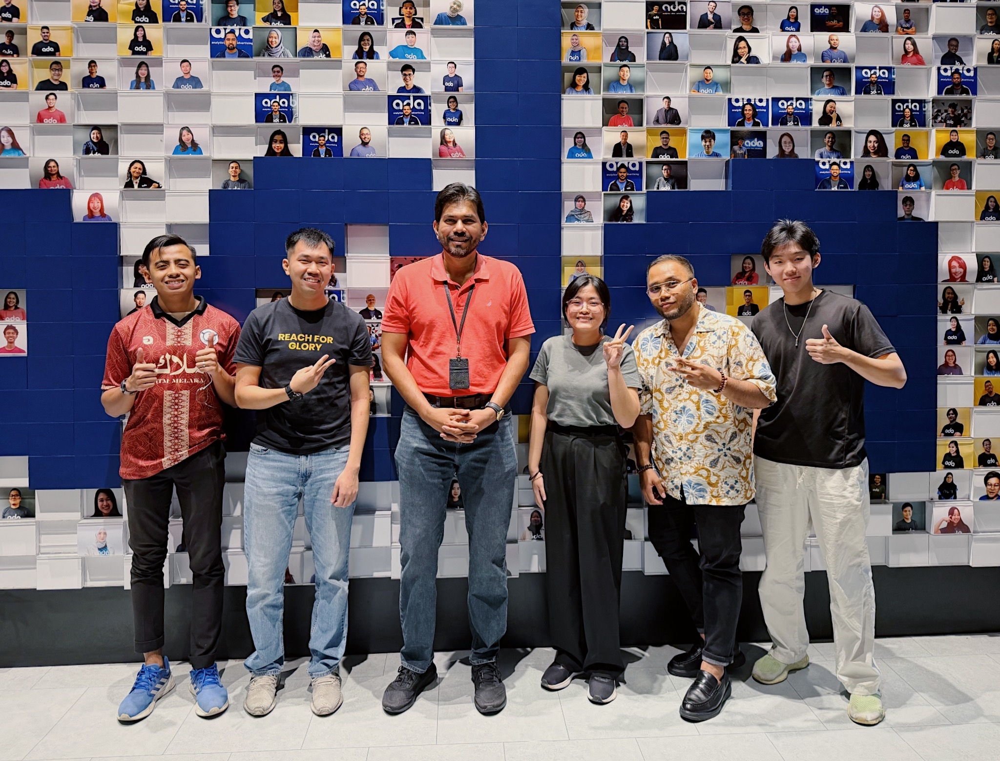

Latest Experience
Jul 2025 – Oct 2025
Internal Audit (Data Analytics) Intern
ADA Data & AI Solutions
- Applied data analytics to perform continuous audits on revenue recognition, access controls, and travel compliance — integrating, cleaning, and reconciling cross-functional datasets to surface discrepancies, control gaps, and policy violations.
- Built end-to-end data pipelines and Power BI dashboards (Travel Portal, Financial Governance, General Ledger, Access Control, AP/AR) to monitor compliance, detect anomalies, and support real-time decision-making for auditors and HR.
- Conducted data validation and cross-referencing across multiple sources to ensure accuracy and reliability of audit evidence, strengthening internal control assessments.
- Transformed raw operational and financial data into interactive visualisations and audit-ready insights, improving efficiency in risk assessment, exception tracking, and financial oversight.
PythonPower BISQLDAXData Auditing
Download Character Reference Letter
